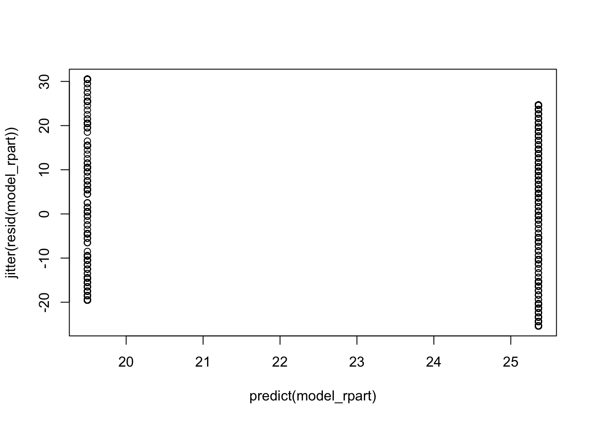
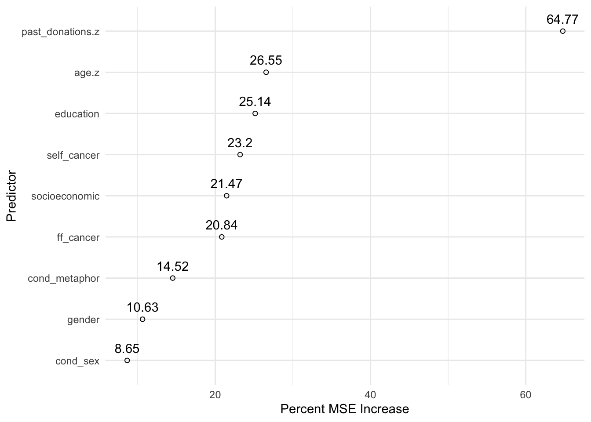
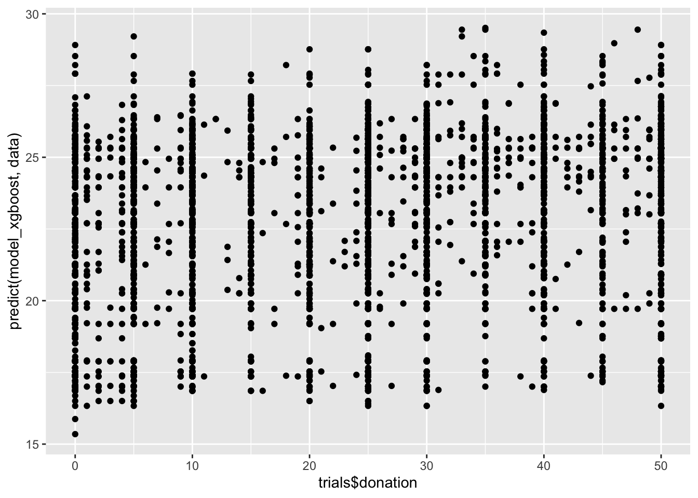
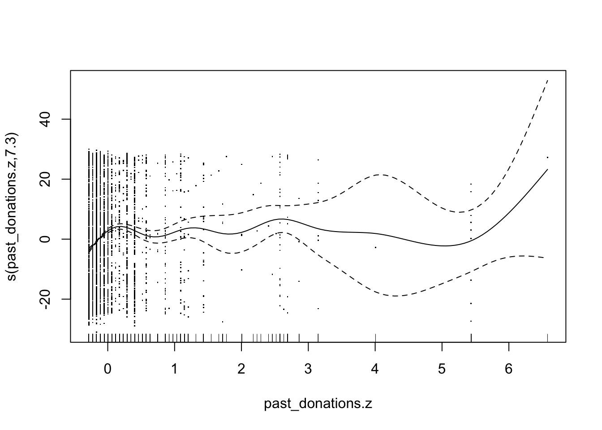
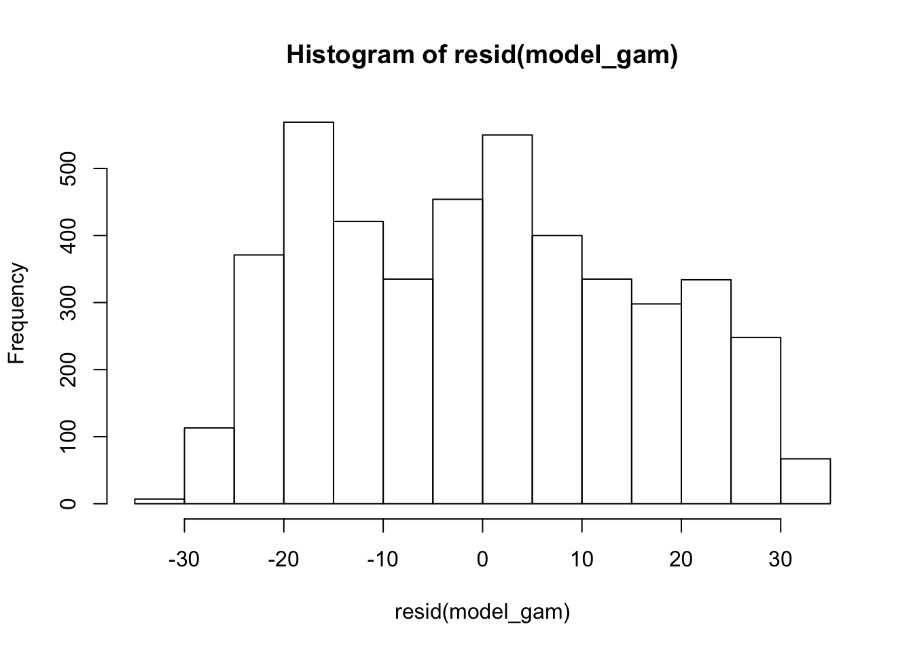

Chapter 3 Metaphors
3.1 Immediate Alternative Questions
Does donation behavior differ between participants in the literal condition and the journey condition?
journey_mask = trials$cond_metaphor != "battle"
model_journey_literal_base = lm(update(base.formula, donation ~ .), data = trials[journey_mask, ])
model_journey_literal_full = lm(update(base.formula, donation ~ . + cond_metaphor), data = trials[journey_mask, ])
compare_lm(model_journey_literal_base, model_journey_literal_full)## Analysis of Variance Table
##
## Model 1: donation ~ cond_sex + self_cancer + ff_cancer + gender + education +
## socioeconomic + past_donations.z + age.z
## Model 2: donation ~ cond_sex + self_cancer + ff_cancer + gender + education +
## socioeconomic + past_donations.z + age.z + cond_metaphor
## Res.Df RSS Df Sum of Sq Pr(>Chi)
## 1 2994 765031
## 2 2993 764880 1 151.53 0.4413
## Chisq Stat: 0.598
## NULLThere is no significant difference in donation amounts between journey and literal conditions.
Does donation behavior differ between participants in the literal condition and the battle condition?
battle_mask = trials$cond_metaphor != "journey"
model_battle_literal_base = lm(update(base.formula, donation ~ .), data = trials[battle_mask, ])
model_battle_literal_full = lm(update(base.formula, donation ~ . + cond_metaphor), data = trials[battle_mask, ])
compare_lm(model_battle_literal_base, model_battle_literal_full)## Analysis of Variance Table
##
## Model 1: donation ~ cond_sex + self_cancer + ff_cancer + gender + education +
## socioeconomic + past_donations.z + age.z
## Model 2: donation ~ cond_sex + self_cancer + ff_cancer + gender + education +
## socioeconomic + past_donations.z + age.z + cond_metaphor
## Res.Df RSS Df Sum of Sq Pr(>Chi)
## 1 2989 767780
## 2 2988 767374 1 406.21 0.2085
## Chisq Stat: 1.595
## NULLThere is no significant difference in donation amounts between battle and literal conditions.
H: Donors contribute different amounts to a campaign which employs battle metaphors compared to a campaign which employs journey metaphors.
literal_mask = trials$cond_metaphor != "literal"
model_battle_journey_base = lm(update(base.formula, donation ~ .), data = trials[literal_mask, ])
model_battle_journey_full = lm(update(base.formula, donation ~ . + cond_metaphor), data = trials[literal_mask, ])
compare_lm(model_battle_journey_base, model_battle_journey_full)## Analysis of Variance Table
##
## Model 1: donation ~ cond_sex + self_cancer + ff_cancer + gender + education +
## socioeconomic + past_donations.z + age.z
## Model 2: donation ~ cond_sex + self_cancer + ff_cancer + gender + education +
## socioeconomic + past_donations.z + age.z + cond_metaphor
## Res.Df RSS Df Sum of Sq Pr(>Chi)
## 1 2946 752003
## 2 2945 751023 1 979.78 0.04998 *
## ---
## Signif. codes: 0 '***' 0.001 '**' 0.01 '*' 0.05 '.' 0.1 ' ' 1
## Chisq Stat: 3.873
## NULL
## MODEL INFO:
## Observations: 2971
## Dependent Variable: donation
## Type: OLS linear regression
##
## MODEL FIT:
## F(25,2945) = 3.526, p = 0.000
## R² = 0.029
## Adj. R² = 0.021
##
## Standard errors: OLS
## ------------------------------------------------------------------------
## Est. 2.5% 97.5% t val. p
## --------------------------- -------- --------- -------- -------- -------
## (Intercept) 25.593 17.834 33.351 6.468 0.000
## cond_sexfemale -0.700 -1.855 0.456 -1.187 0.235
## self_cancerY 5.556 2.803 8.309 3.957 0.000
## self_cancerOO 2.084 -4.113 8.280 0.659 0.510
## ff_cancerY 1.203 -0.056 2.462 1.874 0.061
## ff_cancerOO 3.828 -0.417 8.072 1.768 0.077
## genderF 0.538 -0.643 1.718 0.893 0.372
## genderNB 1.157 -7.013 9.327 0.278 0.781
## genderOO -0.930 -12.341 10.481 -0.160 0.873
## educationHS -4.525 -12.242 3.193 -1.150 0.250
## educationA -4.108 -11.936 3.720 -1.029 0.304
## educationB -2.929 -10.628 4.770 -0.746 0.456
## educationM -1.028 -8.853 6.798 -0.257 0.797
## educationP -3.181 -11.687 5.326 -0.733 0.464
## educationD -3.659 -12.384 5.066 -0.822 0.411
## educationOO -2.316 -13.814 9.182 -0.395 0.693
## socioeconomic10-25k -0.235 -2.413 1.944 -0.211 0.833
## socioeconomic25-50k 0.865 -1.134 2.863 0.849 0.396
## socioeconomic50-75k 1.007 -1.121 3.135 0.928 0.353
## socioeconomic75-100k 1.889 -0.539 4.317 1.525 0.127
## socioeconomic100-150k 0.891 -1.917 3.700 0.622 0.534
## socioeconomic>150k 2.749 -1.062 6.561 1.414 0.157
## socioeconomicOO -2.440 -6.299 1.420 -1.239 0.215
## past_donations.z 2.472 1.342 3.603 4.289 0.000
## age.z 0.199 -1.031 1.430 0.318 0.751
## cond_metaphorjourney -1.153 -2.307 0.000 -1.960 0.050
## ------------------------------------------------------------------------There is a significant difference in donation amounts between participants exposed to battle metaphors and participants exposed to journey metaphors (Chisq = 4.0, p < 0.05).
# g = trials %>%
# ggplot(aes(cond_anymet, donation)) + ptheme +
# stat_summary(fun.data = mean_se, geom = "errorbar", position = position_dodge(width = 0.35), width = 0.2) +
# stat_summary(fun.data = mean_se, geom = "point", shape = 5, position = position_dodge(width = 0.35)) +
# scale_x_discrete(labels = c("FALSE" = "Literal\n", "TRUE" = "Any\nMetaphor")) +
# scale_y_continuous(labels = scales::dollar) +
# coord_cartesian(ylim = c(22, 27)) +
# labs(x = element_blank(), y = "Donation") +
# geom_signif(comparisons = list(c("FALSE", "TRUE")),
# y_position = 26,
# tip_length = 0.01,
# textsize = 2.75,
# annotations = "list({\U03C7^2}(1) == 0.8, ~~ ns)",
# parse = T)
#
# g
# ggsave("any_metaphor_donation.png", g, width = pwidth/3, height = pheight, bg = "transparent")# g = trials %>%
# ggplot(aes(cond_metaphor, donation)) + ptheme +
# stat_summary(fun.data = mean_se, geom = "errorbar", position = position_dodge(width = 0.35), width = 0.2) +
# stat_summary(fun.data = mean_se, geom = "point", shape = 5, position = position_dodge(width = 0.35)) +
# scale_x_discrete(labels = c("literal" = "Literal\n", "journey" = "Journey\n", "battle" = "Battle\n")) +
# scale_y_continuous(labels = scales::dollar) +
# coord_cartesian(ylim = c(22, 27)) +
# labs(x = element_blank(), y = element_blank())
# # geom_signif(comparisons = list(c("literal", "journey"), c("literal", "battle"), c("battle", "journey")),
# # y_position = c(26.6, 26, 25.4),
# # tip_length = 0.005,
# # textsize = 2.75,
# # annotations = c("list({\U03C7^2}(1) == 0.6, ~~ ns)",
# # "list({\U03C7^2}(1) == 1.7, ~~ ns)",
# # "list({\U03C7^2}(1) == 4.0, ~~ p < 0.05)"),
# # parse = T)
#
# g
# ggsave("metaphor_donation0.png", g, width = pwidth/1.8, height = pheight, bg = "transparent")3.2 Coarse Donation Groups
3.2.1 Metaphor Condition and Presence on Likelihood of Wide Donation Group
Visualizations of donation amounts seems to convey that donations are generally trimodal, on $0, $25, and $50. What if participants donated according to a coarser scale than anticpated? They may have chosen an amount mentally represented as “small” or “medium” or “large”. In other words, we may see an effect if the donations are binned into three groups: lower, middle, and high; corresponding to $0-16.67, $16.67-33.33, and $33.33-50. Note the difference between these wide bins compared to the narrow bins previously explored (which are resurfaced soon).
trials$donation_wide_group = cut(trials$donation,
breaks = c(0, 50*1/3, 50*2/3, 50),
labels = c("small", "medium", "large"),
include.lowest = T)Contingency table: Wide Donation Groups x Any Metaphor
## FALSE TRUE
##
## small 609 1111
## medium 464 978
## large 458 882
##
## FALSE TRUE
##
## small 0.135 0.247
## medium 0.103 0.217
## large 0.102 0.196# g = trials %>%
# mutate(int = interaction(cond_metaphor, donation_wide_group)) %>%
# group_by(int) %>%
# mutate(y = n()) %>%
# ggplot(aes(cond_metaphor, y, fill = int)) + ptheme +
# geom_col(position = position_dodge(width = 0.8), width = 0.75) +
# # dodgerblue1 chartreuse3
# scale_fill_manual(values = c("grey90", "grey90", "grey90",
# "grey80", "grey80", "grey80",
# "grey70", "grey70", "grey70"),
# breaks = c("battle.small",
# "battle.medium",
# "battle.large"),
# labels = c("Small", "Medium", "Large"),
# name = "Donation\nGroup") +
# # scale_fill_manual(values = c("firebrick2", "grey94", "grey94",
# # "firebrick4", "grey94", "grey94",
# # "grey94", "grey94", "grey94"),
# # breaks = c("literal.small",
# # "literal.medium"),
# # labels = c("Small", "Medium"),
# # name = "Donation\nGroup") +
# # scale_fill_manual(values = c("grey94", "dodgerblue1", "dodgerblue1",
# # "grey94", "dodgerblue4", "dodgerblue4",
# # "grey94", "grey94", "grey94"),
# # breaks = c("battle.small",
# # "battle.medium"),
# # labels = c("Small", "Medium"),
# # name = "Donation\nGroup") +
# # scale_fill_manual(values = c("firebrick2", "dodgerblue1", "dodgerblue1",
# # "firebrick4", "dodgerblue4", "dodgerblue4",
# # "grey94", "grey94", "grey94"),
# # breaks = c("battle.small",
# # "literal.small",
# # "battle.medium",
# # "literal.medium"),
# # labels = c("Small", "Small",
# # "Medium", "Medium"),
# # name = "Donation\nGroup") +
#
# scale_x_discrete(labels = c("literal" = "Literal", "battle" = "Battle", "journey" = "Journey")) +
# labs(title = "Count of Participants in Donation Groups by Metaphor Condition", x = "Donation Group", y = "Count of Participants") +
# coord_cartesian(ylim = c(0, 680))
# # geom_signif(xmin = 1 - 0.13,
# # xmax = 2.5,
# # y_position = 650,
# # tip_length = 0.1,
# # textsize = 2.75,
# # annotations = "list({\U03C7^2}(1) == 4.2, ~~ p < 0.05)",
# # parse = T)
#
#
# g
# ggsave("coarse_donations0.png", g, width = pwidth, height = pheight, bg = "transparent")H: Donors are more likely to contribute to the large third when exposed to a campaign which employs battle or journey metaphors compared to a literal campaign
model_sm_l_base = glm(update(base.formula, I(donation_wide_group == "large") ~ .),
data = trials,
family = "binomial")
model_sm_l_full = glm(update(base.formula, I(donation_wide_group == "large") ~ . + cond_anymet),
data = trials,
family = "binomial")
compare_lm(model_sm_l_base, model_sm_l_full)## Analysis of Deviance Table
##
## Model 1: I(donation_wide_group == "large") ~ cond_sex + self_cancer +
## ff_cancer + gender + education + socioeconomic + past_donations.z +
## age.z
## Model 2: I(donation_wide_group == "large") ~ cond_sex + self_cancer +
## ff_cancer + gender + education + socioeconomic + past_donations.z +
## age.z + cond_anymet
## Resid. Df Resid. Dev Df Deviance Pr(>Chi)
## 1 4477 5385.2
## 2 4476 5385.2 1 0.084994 0.7706
## Chisq Stat: 0.085
## NULLThere is no evidence that participants who were exposed to metaphor were any more likely to be “large” donors.
H: Donors are more likely to contribute to the large third or the medium third when exposed to a campaign which employs battle or journey metaphors compared to a literal campaign
model_s_ml_base = glm(update(base.formula, I(donation_wide_group != "small") ~ .),
data = trials,
family = "binomial")
model_s_ml_full = glm(update(base.formula, I(donation_wide_group != "small") ~ . + cond_anymet),
data = trials,
family = "binomial")
compare_lm(model_s_ml_base, model_s_ml_full)## Analysis of Deviance Table
##
## Model 1: I(donation_wide_group != "small") ~ cond_sex + self_cancer +
## ff_cancer + gender + education + socioeconomic + past_donations.z +
## age.z
## Model 2: I(donation_wide_group != "small") ~ cond_sex + self_cancer +
## ff_cancer + gender + education + socioeconomic + past_donations.z +
## age.z + cond_anymet
## Resid. Df Resid. Dev Df Deviance Pr(>Chi)
## 1 4477 5904.0
## 2 4476 5901.5 1 2.474 0.1157
## Chisq Stat: 2.474
## NULLThere is marginal evidence that participants who were exposed to metaphor were slightly more likely to be “large” or “medium” donors. We can break this down further to see differences in likelihood that metaphor exposed participants are more or less likely to be either “medium” or “large” donors.
mask = trials$donation_wide_group %in% c("small", "medium")
model_s_m_base = glm(update(base.formula, I(donation_wide_group == "medium") ~ .),
data = trials[mask, ],
family = "binomial")
model_s_m_full = glm(update(base.formula, I(donation_wide_group == "medium") ~ . + cond_anymet),
data = trials[mask, ],
family = "binomial")
compare_lm(model_s_m_base, model_s_m_full)## Analysis of Deviance Table
##
## Model 1: I(donation_wide_group == "medium") ~ cond_sex + self_cancer +
## ff_cancer + gender + education + socioeconomic + past_donations.z +
## age.z
## Model 2: I(donation_wide_group == "medium") ~ cond_sex + self_cancer +
## ff_cancer + gender + education + socioeconomic + past_donations.z +
## age.z + cond_anymet
## Resid. Df Resid. Dev Df Deviance Pr(>Chi)
## 1 3137 4320.0
## 2 3136 4315.7 1 4.2385 0.03952 *
## ---
## Signif. codes: 0 '***' 0.001 '**' 0.01 '*' 0.05 '.' 0.1 ' ' 1
## Chisq Stat: 4.238
## NULL
## MODEL INFO:
## Observations: 3162
## Dependent Variable: I(donation_wide_group == "medium")
## Type: Generalized linear model
## Family: binomial
## Link function: logit
##
## MODEL FIT:
## χ²(25) = 43.259, p = 0.013
## Pseudo-R² (Cragg-Uhler) = 0.018
## Pseudo-R² (McFadden) = 0.010
## AIC = 4367.731, BIC = 4525.264
##
## Standard errors: MLE
## ----------------------------------------------------------------------
## Est. 2.5% 97.5% z val. p
## --------------------------- -------- -------- ------- -------- -------
## (Intercept) -0.309 -1.286 0.668 -0.619 0.536
## cond_sexfemale -0.052 -0.193 0.090 -0.719 0.472
## self_cancerY 0.342 -0.041 0.726 1.750 0.080
## self_cancerOO -0.273 -1.139 0.594 -0.617 0.538
## ff_cancerY 0.105 -0.047 0.257 1.353 0.176
## ff_cancerOO -0.036 -0.620 0.547 -0.122 0.903
## genderF 0.068 -0.077 0.214 0.922 0.357
## genderNB -0.074 -1.056 0.908 -0.147 0.883
## genderOO -0.357 -1.798 1.084 -0.485 0.627
## educationHS -0.268 -1.238 0.703 -0.541 0.589
## educationA -0.132 -1.114 0.850 -0.264 0.792
## educationB 0.007 -0.960 0.975 0.015 0.988
## educationM 0.169 -0.815 1.152 0.336 0.737
## educationP 0.210 -0.846 1.265 0.389 0.697
## educationD -0.205 -1.304 0.893 -0.366 0.714
## educationOO -0.119 -1.626 1.388 -0.155 0.877
## socioeconomic10-25k 0.058 -0.204 0.321 0.437 0.662
## socioeconomic25-50k 0.049 -0.191 0.290 0.403 0.687
## socioeconomic50-75k -0.076 -0.334 0.182 -0.576 0.565
## socioeconomic75-100k 0.134 -0.164 0.432 0.882 0.378
## socioeconomic100-150k -0.012 -0.354 0.330 -0.067 0.946
## socioeconomic>150k -0.290 -0.794 0.214 -1.127 0.260
## socioeconomicOO -0.477 -0.974 0.021 -1.877 0.061
## past_donations.z 0.087 -0.067 0.240 1.107 0.268
## age.z 0.061 -0.089 0.212 0.801 0.423
## cond_anymetTRUE 0.157 0.007 0.307 2.056 0.040
## ----------------------------------------------------------------------mask = trials$donation_wide_group %in% c("medium", "large") & trials$cond_metaphor %in% c("literal", "battle")
model_met_s_l_base = glm(update(base.formula, I(donation_wide_group == "large") ~ .),
data = trials[mask, ],
family = "binomial")
model_met_s_l_full = glm(update(base.formula, I(donation_wide_group == "large") ~ . + cond_metaphor),
data = trials[mask, ],
family = "binomial")
compare_lm(model_met_s_l_base, model_met_s_l_full)## Analysis of Deviance Table
##
## Model 1: I(donation_wide_group == "large") ~ cond_sex + self_cancer +
## ff_cancer + gender + education + socioeconomic + past_donations.z +
## age.z
## Model 2: I(donation_wide_group == "large") ~ cond_sex + self_cancer +
## ff_cancer + gender + education + socioeconomic + past_donations.z +
## age.z + cond_metaphor
## Resid. Df Resid. Dev Df Deviance Pr(>Chi)
## 1 1845 2547.4
## 2 1844 2547.3 1 0.082458 0.774
## Chisq Stat: 0.082
## NULLmask = trials$donation_wide_group %in% c("small", "large")
model_s_l_base = glm(update(base.formula, I(donation_wide_group == "large") ~ .),
data = trials[mask, ],
family = "binomial")
model_s_l_full = glm(update(base.formula, I(donation_wide_group == "large") ~ . + cond_anymet),
data = trials[mask, ],
family = "binomial")
compare_lm(model_s_l_base, model_s_l_full)## Analysis of Deviance Table
##
## Model 1: I(donation_wide_group == "large") ~ cond_sex + self_cancer +
## ff_cancer + gender + education + socioeconomic + past_donations.z +
## age.z
## Model 2: I(donation_wide_group == "large") ~ cond_sex + self_cancer +
## ff_cancer + gender + education + socioeconomic + past_donations.z +
## age.z + cond_anymet
## Resid. Df Resid. Dev Df Deviance Pr(>Chi)
## 1 3035 4082.4
## 2 3034 4082.2 1 0.24269 0.6223
## Chisq Stat: 0.243
## NULLThere is evidence that participants exposed to metaphor are more likely to donate “medium” amounts than “small” amounts (Chisq = 4.2, p < 0.05). However, there is no evidence that participants who are exposed to metaphor are any more likely to donate “large” amounts than “small” amounts.
NH: Participants who were exposed to battle metaphor versus those exposed to journey metaphors were equally likely to choose to donate a “large” amount compared to a “small” amount.
mask = trials$donation_wide_group %in% c("small", "large") & trials$cond_metaphor %in% c("journey", "battle")
model_met_s_l_base = glm(update(base.formula, I(donation_wide_group == "large") ~ .),
data = trials[mask, ],
family = "binomial")
model_met_s_l_full = glm(update(base.formula, I(donation_wide_group == "large") ~ . + cond_metaphor),
data = trials[mask, ],
family = "binomial")
compare_lm(model_met_s_l_base, model_met_s_l_full)## Analysis of Deviance Table
##
## Model 1: I(donation_wide_group == "large") ~ cond_sex + self_cancer +
## ff_cancer + gender + education + socioeconomic + past_donations.z +
## age.z
## Model 2: I(donation_wide_group == "large") ~ cond_sex + self_cancer +
## ff_cancer + gender + education + socioeconomic + past_donations.z +
## age.z + cond_metaphor
## Resid. Df Resid. Dev Df Deviance Pr(>Chi)
## 1 1968 2663.8
## 2 1967 2659.2 1 4.5505 0.03291 *
## ---
## Signif. codes: 0 '***' 0.001 '**' 0.01 '*' 0.05 '.' 0.1 ' ' 1
## Chisq Stat: 4.55
## NULL
## MODEL INFO:
## Observations: 1993
## Dependent Variable: I(donation_wide_group == "large")
## Type: Generalized linear model
## Family: binomial
## Link function: logit
##
## MODEL FIT:
## χ²(25) = 77.283, p = 0.000
## Pseudo-R² (Cragg-Uhler) = 0.051
## Pseudo-R² (McFadden) = 0.028
## AIC = 2711.231, BIC = 2856.764
##
## Standard errors: MLE
## -----------------------------------------------------------------------
## Est. 2.5% 97.5% z val. p
## --------------------------- -------- -------- -------- -------- -------
## (Intercept) 0.012 -1.159 1.184 0.021 0.983
## cond_sexfemale -0.097 -0.279 0.085 -1.048 0.295
## self_cancerY 0.866 0.418 1.313 3.789 0.000
## self_cancerOO 0.038 -0.871 0.947 0.082 0.935
## ff_cancerY 0.189 -0.010 0.388 1.861 0.063
## ff_cancerOO 0.415 -0.229 1.060 1.264 0.206
## genderF 0.019 -0.166 0.203 0.197 0.844
## genderNB -0.089 -1.407 1.229 -0.132 0.895
## genderOO -0.250 -2.049 1.550 -0.272 0.786
## educationHS -0.624 -1.794 0.546 -1.046 0.296
## educationA -0.547 -1.737 0.644 -0.900 0.368
## educationB -0.308 -1.475 0.859 -0.517 0.605
## educationM -0.035 -1.223 1.153 -0.058 0.954
## educationP -0.433 -1.737 0.871 -0.651 0.515
## educationD -0.424 -1.744 0.897 -0.628 0.530
## educationOO -0.264 -2.029 1.500 -0.293 0.769
## socioeconomic10-25k -0.078 -0.427 0.271 -0.438 0.661
## socioeconomic25-50k 0.135 -0.180 0.451 0.841 0.401
## socioeconomic50-75k 0.152 -0.182 0.485 0.890 0.374
## socioeconomic75-100k 0.202 -0.181 0.586 1.034 0.301
## socioeconomic100-150k 0.106 -0.329 0.542 0.479 0.632
## socioeconomic>150k 0.372 -0.210 0.954 1.253 0.210
## socioeconomicOO -0.295 -0.896 0.306 -0.963 0.336
## past_donations.z 0.353 0.161 0.546 3.595 0.000
## age.z -0.047 -0.243 0.150 -0.465 0.642
## cond_metaphorjourney -0.197 -0.379 -0.016 -2.131 0.033
## -----------------------------------------------------------------------Given the observed data for participants who saw either battle or journey metaphors, those who were exposed to battle metaphors were significantly more likely to donate a “large” amount compared to a “small” amount.
NH: Participants who were exposed to battle metaphor versus those exposed to journey metaphors were equally likely to choose to donate a “large” amount compared to a “medium” amount.
mask = trials$donation_wide_group %in% c("medium", "large") & trials$cond_metaphor %in% c("journey", "battle")
model_met_m_l_base = glm(update(base.formula, I(donation_wide_group == "large") ~ .),
data = trials[mask, ],
family = "binomial")
model_met_m_l_full = glm(update(base.formula, I(donation_wide_group == "large") ~ . + cond_metaphor),
data = trials[mask, ],
family = "binomial")
compare_lm(model_met_m_l_base, model_met_m_l_full)## Analysis of Deviance Table
##
## Model 1: I(donation_wide_group == "large") ~ cond_sex + self_cancer +
## ff_cancer + gender + education + socioeconomic + past_donations.z +
## age.z
## Model 2: I(donation_wide_group == "large") ~ cond_sex + self_cancer +
## ff_cancer + gender + education + socioeconomic + past_donations.z +
## age.z + cond_metaphor
## Resid. Df Resid. Dev Df Deviance Pr(>Chi)
## 1 1835 2532.4
## 2 1834 2531.0 1 1.4535 0.228
## Chisq Stat: 1.454
## NULLNS
H: Participants who were exposed to battle metaphor versus those exposed to journey metaphors were equally likely to choose to donate a “medium” amount compared to a “small” amount.
mask = trials$donation_wide_group %in% c("small", "medium") & trials$cond_metaphor %in% c("journey", "battle")
model_met_s_m_base = glm(update(base.formula, I(donation_wide_group == "medium") ~ .),
data = trials[mask, ],
family = "binomial")
model_met_s_m_full = glm(update(base.formula, I(donation_wide_group == "medium") ~ . + cond_metaphor),
data = trials[mask, ],
family = "binomial")
compare_lm(model_met_s_m_base, model_met_s_m_full)## Analysis of Deviance Table
##
## Model 1: I(donation_wide_group == "medium") ~ cond_sex + self_cancer +
## ff_cancer + gender + education + socioeconomic + past_donations.z +
## age.z
## Model 2: I(donation_wide_group == "medium") ~ cond_sex + self_cancer +
## ff_cancer + gender + education + socioeconomic + past_donations.z +
## age.z + cond_metaphor
## Resid. Df Resid. Dev Df Deviance Pr(>Chi)
## 1 2064 2862.6
## 2 2063 2861.9 1 0.65247 0.4192
## Chisq Stat: 0.652
## NULLNS
3.2.2 Metaphor Condition and Presence on Likelihood of Narrow Donation Group
Because the campaign is fictional and participants are given an upper bound on their donations, there may not be the same motivations to donate specific amounts compared to a real world fundraiser. Participants may choose to donate under one of the three most salient responses: $0, $25, or $50, or something very close ($5 to $0 or $45 to $50).
Thus, we measure the effect of metaphor presence of participants’ decision to choose one of these three groups of donation amounts (small, medium, and large).
## FALSE TRUE
##
## 596 1118
## large 237 443
## medium 422 875
## small 276 535
##
## FALSE TRUE
##
## 0.132 0.248
## large 0.053 0.098
## medium 0.094 0.194
## small 0.061 0.119H: Donors are more likely to contribute a “large” donation ($45 or $50) when exposed to a campaign which employs battle or journey metaphors compared to a literal campaign
mask = trials$donation_narrow_group != ""
model_sm_l_base = glm(update(base.formula, I(donation_narrow_group == "large") ~ .),
data = trials[mask, ],
family = "binomial")
model_sm_l_full = glm(update(base.formula, I(donation_narrow_group == "large") ~ . + cond_anymet),
data = trials[mask, ],
family = "binomial")
compare_lm(model_sm_l_base, model_sm_l_full)## Analysis of Deviance Table
##
## Model 1: I(donation_narrow_group == "large") ~ cond_sex + self_cancer +
## ff_cancer + gender + education + socioeconomic + past_donations.z +
## age.z
## Model 2: I(donation_narrow_group == "large") ~ cond_sex + self_cancer +
## ff_cancer + gender + education + socioeconomic + past_donations.z +
## age.z + cond_anymet
## Resid. Df Resid. Dev Df Deviance Pr(>Chi)
## 1 2763 3030.4
## 2 2762 3029.5 1 0.91468 0.3389
## Chisq Stat: 0.915
## NULLThere is no evidence that there is an effect of metaphor presence on participants’ decision to make a small or medium donation compared to a large donation.
H: Donors are more likely to contribute a “large” or “medium” donation ($20, $25, $30) when exposed to a campaign which employs battle or journey metaphors compared to a literal campaign
mask = trials$donation_narrow_group != ""
model_s_ml_base = glm(update(base.formula, I(donation_narrow_group != "small") ~ .),
data = trials[mask, ],
family = "binomial")
model_s_ml_full = glm(update(base.formula, I(donation_narrow_group != "small") ~ . + cond_anymet),
data = trials[mask, ],
family = "binomial")
compare_lm(model_s_ml_base, model_s_ml_full)## Analysis of Deviance Table
##
## Model 1: I(donation_narrow_group != "small") ~ cond_sex + self_cancer +
## ff_cancer + gender + education + socioeconomic + past_donations.z +
## age.z
## Model 2: I(donation_narrow_group != "small") ~ cond_sex + self_cancer +
## ff_cancer + gender + education + socioeconomic + past_donations.z +
## age.z + cond_anymet
## Resid. Df Resid. Dev Df Deviance Pr(>Chi)
## 1 2763 3301.9
## 2 2762 3301.5 1 0.32706 0.5674
## Chisq Stat: 0.327
## NULLThere is no evidence that there is an effect of metaphor presence on participants’ decision to make a small donation compared to a medium or large donation.
We can attempt to break down this last result into a small-medium contrast and small-large contrast:
mask = trials$donation_narrow_group %in% c("small", "medium")
model_s_m_base = glm(update(base.formula, I(donation_narrow_group == "medium") ~ .),
data = trials[mask, ],
family = "binomial")
model_s_m_full = glm(update(base.formula, I(donation_narrow_group == "medium") ~ . + cond_anymet),
data = trials[mask, ],
family = "binomial")
compare_lm(model_s_m_base, model_s_m_full)## Analysis of Deviance Table
##
## Model 1: I(donation_narrow_group == "medium") ~ cond_sex + self_cancer +
## ff_cancer + gender + education + socioeconomic + past_donations.z +
## age.z
## Model 2: I(donation_narrow_group == "medium") ~ cond_sex + self_cancer +
## ff_cancer + gender + education + socioeconomic + past_donations.z +
## age.z + cond_anymet
## Resid. Df Resid. Dev Df Deviance Pr(>Chi)
## 1 2083 2767.5
## 2 2082 2766.6 1 0.92207 0.3369
## Chisq Stat: 0.922
## NULLThere is no evidence that there is an effect of metaphor presence on participants’ decision to make a small donation compared to a medium donation.
mask = trials$donation_narrow_group %in% c("small", "large")
model_s_l_base = glm(update(base.formula, I(donation_narrow_group == "large") ~ .),
data = trials[mask, ],
family = "binomial")
model_s_l_full = glm(update(base.formula, I(donation_narrow_group == "large") ~ . + cond_anymet),
data = trials[mask, ],
family = "binomial")
compare_lm(model_s_l_base, model_s_l_full)## Analysis of Deviance Table
##
## Model 1: I(donation_narrow_group == "large") ~ cond_sex + self_cancer +
## ff_cancer + gender + education + socioeconomic + past_donations.z +
## age.z
## Model 2: I(donation_narrow_group == "large") ~ cond_sex + self_cancer +
## ff_cancer + gender + education + socioeconomic + past_donations.z +
## age.z + cond_anymet
## Resid. Df Resid. Dev Df Deviance Pr(>Chi)
## 1 1466 1977.0
## 2 1465 1976.8 1 0.1908 0.6623
## Chisq Stat: 0.191
## NULLThere is no evidence that there is an effect of metaphor presence on participants’ decision to make a small donation compared to a large donation.
NH: Participants who were exposed to battle metaphor versus those exposed to journey metaphors were equally likely to choose to donate a “large” amount compared to a “small” amount.
mask = trials$donation_narrow_group %in% c("small", "large") & trials$cond_metaphor %in% c("journey", "battle")
model_met_s_l_base = glm(update(base.formula, I(donation_narrow_group == "large") ~ .),
data = trials[mask, ],
family = "binomial")
model_met_s_l_full = glm(update(base.formula, I(donation_narrow_group == "large") ~ . + cond_metaphor),
data = trials[mask, ],
family = "binomial")
compare_lm(model_met_s_l_base, model_met_s_l_full)## Analysis of Deviance Table
##
## Model 1: I(donation_narrow_group == "large") ~ cond_sex + self_cancer +
## ff_cancer + gender + education + socioeconomic + past_donations.z +
## age.z
## Model 2: I(donation_narrow_group == "large") ~ cond_sex + self_cancer +
## ff_cancer + gender + education + socioeconomic + past_donations.z +
## age.z + cond_metaphor
## Resid. Df Resid. Dev Df Deviance Pr(>Chi)
## 1 953 1299.2
## 2 952 1298.0 1 1.1945 0.2744
## Chisq Stat: 1.194
## NULLGiven the observed data for participants who saw either battle or journey metaphors, those who were exposed to battle metaphors were significantly more likely to donate a “large” amount compared to a “small” amount.
NH: Participants who were exposed to battle metaphor versus those exposed to journey metaphors were equally likely to choose to donate a “large” amount compared to a “medium” amount.
mask = trials$donation_narrow_group %in% c("medium", "large") & trials$cond_metaphor %in% c("journey", "battle")
model_met_m_l_base = glm(update(base.formula, I(donation_narrow_group == "large") ~ .),
data = trials[mask, ],
family = "binomial")
model_met_m_l_full = glm(update(base.formula, I(donation_narrow_group == "large") ~ . + cond_metaphor),
data = trials[mask, ],
family = "binomial")
compare_lm(model_met_m_l_base, model_met_m_l_full)## Analysis of Deviance Table
##
## Model 1: I(donation_narrow_group == "large") ~ cond_sex + self_cancer +
## ff_cancer + gender + education + socioeconomic + past_donations.z +
## age.z
## Model 2: I(donation_narrow_group == "large") ~ cond_sex + self_cancer +
## ff_cancer + gender + education + socioeconomic + past_donations.z +
## age.z + cond_metaphor
## Resid. Df Resid. Dev Df Deviance Pr(>Chi)
## 1 1293 1643.6
## 2 1292 1642.8 1 0.7419 0.3891
## Chisq Stat: 0.742
## NULLH: Participants who were exposed to battle metaphor versus those exposed to journey metaphors were equally likely to choose to donate a “medium” amount compared to a “small” amount.
mask = trials$donation_narrow_group %in% c("small", "medium") & trials$cond_metaphor %in% c("journey", "battle")
model_met_s_m_base = glm(update(base.formula, I(donation_narrow_group == "medium") ~ .),
data = trials[mask, ],
family = "binomial")
model_met_s_m_full = glm(update(base.formula, I(donation_narrow_group == "medium") ~ . + cond_metaphor),
data = trials[mask, ],
family = "binomial")
compare_lm(model_met_s_m_base, model_met_s_m_full)## Analysis of Deviance Table
##
## Model 1: I(donation_narrow_group == "medium") ~ cond_sex + self_cancer +
## ff_cancer + gender + education + socioeconomic + past_donations.z +
## age.z
## Model 2: I(donation_narrow_group == "medium") ~ cond_sex + self_cancer +
## ff_cancer + gender + education + socioeconomic + past_donations.z +
## age.z + cond_metaphor
## Resid. Df Resid. Dev Df Deviance Pr(>Chi)
## 1 1385 1844.5
## 2 1384 1844.4 1 0.1435 0.7048
## Chisq Stat: 0.143
## NULL3.3 Broader Alternative Questions
3.3.1 Gaussian Mixture Model
The donations appear to be clustered around $0, $25, and $50. Here’s an attempt at modeling these peaks under a trimodal mixture of regressions model.
This section is still under development.
# library(flexmix)# mixture = flexmix(update(base.formula, donation ~ . + cond_anymet),
# data = trials,
# k = 3,
# control = list(iter.max = 600,
# verbose = 100))
#
# summary(mixture)
# parameters(mixture)
# plot(mixture)# c1_mu <- mixture@components$Comp.1[[1]]@parameters$coef["(Intercept)"]
# c1_sig <- mixture@components$Comp.1[[1]]@parameters$sigma
# c2_mu <- mixture@components$Comp.2[[1]]@parameters$coef["(Intercept)"]
# c2_sig <- mixture@components$Comp.2[[1]]@parameters$sigma
# c3_mu <- mixture@components$Comp.3[[1]]@parameters$coef["(Intercept)"]
# c3_sig <- mixture@components$Comp.3[[1]]@parameters$sigma
#
# x = seq(0, 50, by = 0.5)
# ggplot() + itheme +
# geom_line(aes(trials$donation), color = "red", stat = "density") +
# geom_line(aes(x, dnorm(x, mean = c1_mu, sd = c1_sig)), color = "blue") +
# geom_line(aes(x, dnorm(x, mean = c2_mu, sd = c2_sig)), color = "green") +
# geom_line(aes(x, dnorm(x, mean = c3_mu, sd = c3_sig)), color = "orange") +
# coord_cartesian(xlim = c(0,50))# plot(refit(mixture))# N = 1000
# x = rnorm(N, mean = c(-25, 0, 25), sd = 2)
# length(x)
#
# y = 25 + x + rnorm(N, 0, 1)
# length(y)# m = flexmix(y ~ x, k = 3, control = list(minprior = 0))
# m = FLXglmFix(fixed = ~x, varFix = F)
# fit = stepFlexmix(y ~ 1, model = m, nrep = 6, k = 3)
# fit
# summary(fit)
# parameters(fit)# q = seq(0, 50, by=0.1)
# ggplot() +
# geom_density(aes(y)) +
# geom_line(aes(q, dnorm(q, fit@components$Comp.1[[1]]@parameters$coef["(Intercept)"], fit@components$Comp.1[[1]]@parameters$sigma))) +
# geom_line(aes(q, dnorm(q, fit@components$Comp.2[[1]]@parameters$coef["(Intercept)"], fit@components$Comp.2[[1]]@parameters$sigma))) +
# geom_line(aes(q, dnorm(q, fit@components$Comp.3[[1]]@parameters$coef["(Intercept)"], fit@components$Comp.3[[1]]@parameters$sigma)))3.3.2 Decision Tree
library(rpart)
library(rpart.plot)model_rpart <- rpart(update(base.formula, donation ~ .),
method = "anova",
data = trials)
model_rpart## n= 4502
##
## node), split, n, deviance, yval
## * denotes terminal node
##
## 1) root 4502 1177791.0 23.53088
## 2) past_donations.z< -0.1966858 1404 381195.0 19.49573 *
## 3) past_donations.z>=-0.1966858 3098 763375.4 25.35959 *printcp(model_rpart)##
## Regression tree:
## rpart(formula = update(base.formula, donation ~ .), data = trials,
## method = "anova")
##
## Variables actually used in tree construction:
## [1] past_donations.z
##
## Root node error: 1177791/4502 = 261.62
##
## n= 4502
##
## CP nsplit rel error xerror xstd
## 1 0.028206 0 1.00000 1.0007 0.013705
## 2 0.010000 1 0.97179 0.9729 0.013903plot(predict(model_rpart), jitter(resid(model_rpart)))
3.3.3 Random Forest Regression
Preliminary work
library(randomForest)## randomForest 4.6-14## Type rfNews() to see new features/changes/bug fixes.##
## Attaching package: 'randomForest'## The following object is masked from 'package:gridExtra':
##
## combine## The following object is masked from 'package:dplyr':
##
## combine## The following object is masked from 'package:ggplot2':
##
## marginrf = randomForest(update(base.formula, donation ~ . + cond_metaphor),
data = trials,
mtry = 2,
nPerm = 3,
importance = T,
ntree = 1000,
do.trace = 250)## | Out-of-bag |
## Tree | MSE %Var(y) |
## 250 | 252.4 96.49 |
## 500 | 251.5 96.15 |
## 750 | 251.8 96.24 |
## 1000 | 251.8 96.26 |rf##
## Call:
## randomForest(formula = update(base.formula, donation ~ . + cond_metaphor), data = trials, mtry = 2, nPerm = 3, importance = T, ntree = 1000, do.trace = 250)
## Type of random forest: regression
## Number of trees: 1000
## No. of variables tried at each split: 2
##
## Mean of squared residuals: 251.837
## % Var explained: 3.74imp <- importance(rf, type = 1)
imp <- as.data.frame(imp)
imp <- cbind(imp, var = rownames(imp))
rownames(imp) <- NULL
colnames(imp)[1] <- "PercentMSEInc"
imp %>%
arrange(PercentMSEInc)## PercentMSEInc var
## 1 8.653897 cond_sex
## 2 10.632344 gender
## 3 14.520240 cond_metaphor
## 4 20.839725 ff_cancer
## 5 21.466540 socioeconomic
## 6 23.203906 self_cancer
## 7 25.144753 education
## 8 26.550979 age.z
## 9 64.767338 past_donations.z3.082656 cond_sex
4.402399 cond_anymet
8.915330 gender
19.014619 socioeconomic
19.713089 ff_cancer
20.159477 self_cancer
23.262238 education
23.662233 age.z
62.021355 past_donations.z
imp %>%
arrange(PercentMSEInc) %>%
mutate(var = factor(var, var)) %>%
ggplot(aes(var, PercentMSEInc)) + itheme +
labs(x = "Predictor", y = "Percent MSE Increase") +
geom_point(shape = 1) +
geom_text(aes(label = round(PercentMSEInc, 2)), nudge_x = 0.3) +
coord_flip()
3.3.4 xgboost
library(xgboost)##
## Attaching package: 'xgboost'## The following object is masked from 'package:dplyr':
##
## slicetrain <- model.matrix(update(base.formula, ~ 0 + . + cond_anymet), trials)
data <- xgb.DMatrix(data = train, label = trials$donation)
model_xgboost <- xgboost(data = data,
nrounds = 10,
max_depth = 2)## [1] train-rmse:22.736273
## [2] train-rmse:19.543009
## [3] train-rmse:17.756754
## [4] train-rmse:16.808321
## [5] train-rmse:16.308138
## [6] train-rmse:16.050875
## [7] train-rmse:15.914721
## [8] train-rmse:15.838706
## [9] train-rmse:15.796639
## [10] train-rmse:15.771056imp <- xgb.importance(model = model_xgboost)
# xgb.plot.importance(imp)
imp## Feature Gain Cover Frequency
## 1: past_donations.z 0.702244305 0.43084185 0.36666667
## 2: age.z 0.108940344 0.15981786 0.26666667
## 3: ff_cancerY 0.042051614 0.08365171 0.06666667
## 4: self_cancerY 0.038167501 0.08440693 0.06666667
## 5: ff_cancerOO 0.019857059 0.01559307 0.03333333
## 6: educationM 0.018635433 0.05000000 0.03333333
## 7: educationP 0.018234205 0.00345402 0.03333333
## 8: educationHS 0.016573641 0.02445580 0.03333333
## 9: socioeconomic10-25k 0.013243446 0.04777876 0.03333333
## 10: self_cancerOO 0.012567527 0.05000000 0.03333333
## 11: socioeconomic75-100k 0.009484925 0.05000000 0.03333333# data <- xgb.DMatrix(data = train[100:102, ], label = trials$donation[100:102])
# rbind(trials$donation[100:102], predict(model_xgboost, data))
ggplot() +
geom_point(aes(trials$donation, predict(model_xgboost, data)))
3.4 GAMs
library(mgcv)## Loading required package: nlme##
## Attaching package: 'nlme'## The following object is masked from 'package:glue':
##
## collapse## The following object is masked from 'package:dplyr':
##
## collapse## This is mgcv 1.8-31. For overview type 'help("mgcv-package")'.head(trials$socioeconomic)## [1] 75-100k 10-25k 10-25k 10-25k 50-75k 25-50k
## Levels: <10k 10-25k 25-50k 50-75k 75-100k 100-150k >150k OOunique(as.numeric(trials$socioeconomic))## [1] 5 2 4 3 1 6 7 8model_gam <- gam(donation ~ cond_sex + self_cancer + ff_cancer + gender + education + socioeconomic +
s(past_donations.z) + age.z + cond_anymet,
data = trials %>%
mutate(education = as.integer(education),
socioeconomic = as.integer(socioeconomic)))
summary(model_gam)##
## Family: gaussian
## Link function: identity
##
## Formula:
## donation ~ cond_sex + self_cancer + ff_cancer + gender + education +
## socioeconomic + s(past_donations.z) + age.z + cond_anymet
##
## Parametric coefficients:
## Estimate Std. Error t value Pr(>|t|)
## (Intercept) 20.1450 1.0346 19.471 < 2e-16 ***
## cond_sexfemale -0.5879 0.4744 -1.239 0.215309
## self_cancerY 4.0293 1.1678 3.450 0.000565 ***
## self_cancerOO 5.0268 2.5187 1.996 0.046015 *
## ff_cancerY 1.7131 0.5134 3.336 0.000855 ***
## ff_cancerOO 3.7574 1.8345 2.048 0.040599 *
## genderF 0.5305 0.4847 1.095 0.273789
## genderNB 1.9542 3.2003 0.611 0.541481
## genderOO -5.2548 4.6286 -1.135 0.256316
## education 0.4277 0.2122 2.015 0.043937 *
## socioeconomic 0.1028 0.1506 0.682 0.495092
## age.z -0.9012 0.4940 -1.824 0.068188 .
## cond_anymetTRUE 0.1697 0.5002 0.339 0.734406
## ---
## Signif. codes: 0 '***' 0.001 '**' 0.01 '*' 0.05 '.' 0.1 ' ' 1
##
## Approximate significance of smooth terms:
## edf Ref.df F p-value
## s(past_donations.z) 7.298 8.18 14.42 <2e-16 ***
## ---
## Signif. codes: 0 '***' 0.001 '**' 0.01 '*' 0.05 '.' 0.1 ' ' 1
##
## R-sq.(adj) = 0.0375 Deviance explained = 4.16%
## GCV = 253.01 Scale est. = 251.87 n = 4502plot(model_gam, residuals = T)
hist(resid(model_gam))